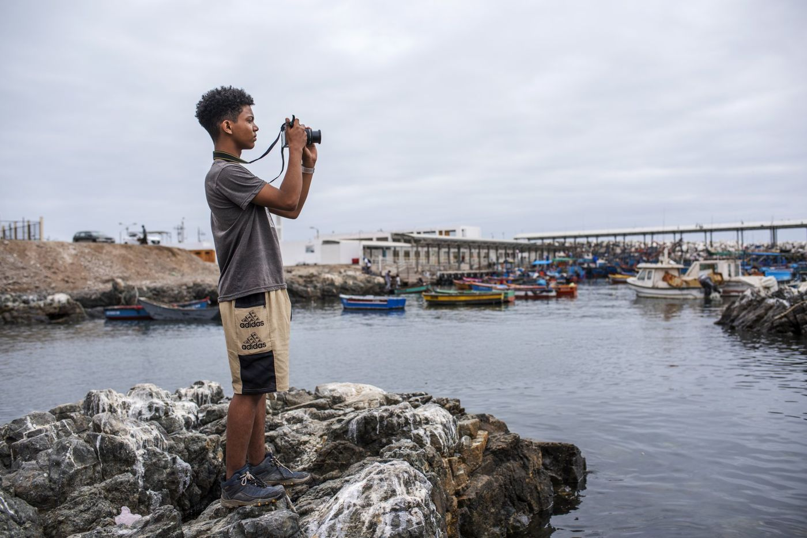

Con la OIM Perú · desde 2022
Memorias Migrantes
Laboratorios audiovisuales participativos en distintos puntos del país, donde niñas, niños y adolescentes venezolanos y peruanos exploran y comparten sus propias experiencias. El audiovisual como herramienta de integración, inclusión social y diálogo con las comunidades de acogida.
Ver el proyecto →